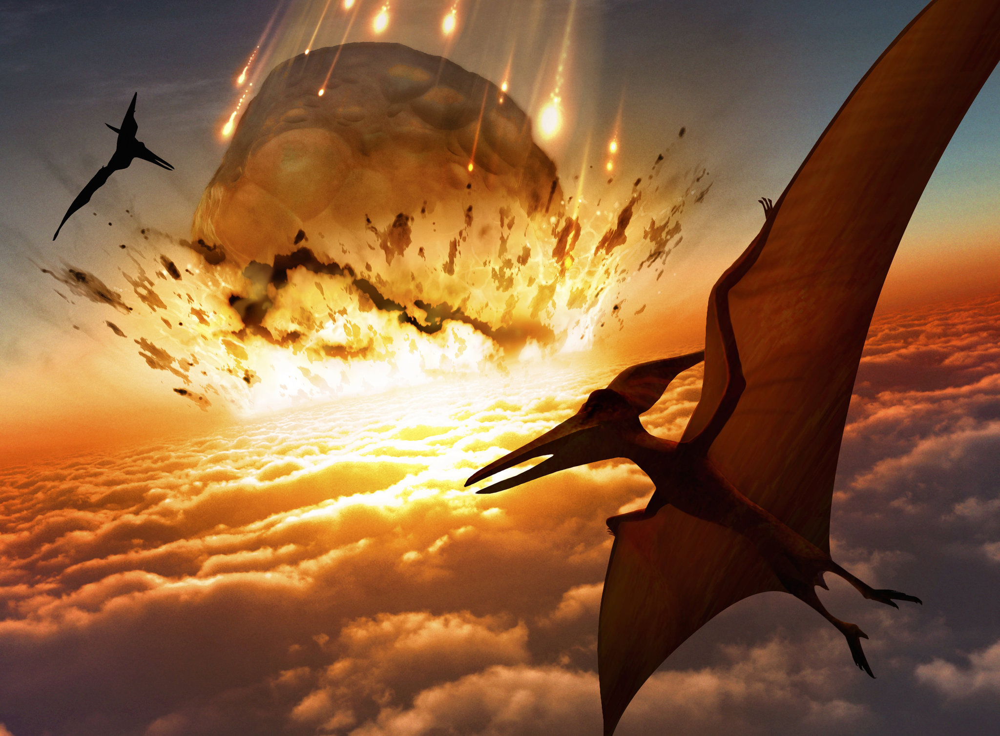

Introducción
La extinción de los dinosaurios es uno de los eventos más importantes en la historia de la Tierra. Ocurre hace aproximadamente 65 millones de años y marca el fin del período Cretácico. Este evento tuvo un impacto significativo en la evolución de la vida en la Tierra.

Causas de la extinción
Existen varias teorías sobre las posibles causas de la extinción de los dinosaurios. Una de las teorías más aceptadas es la hipótesis del impacto de un asteroide o cometa. Según esta teoría, un objeto del espacio impactó la Tierra, generando un evento catastrófico que alteró el clima y el medio ambiente de manera drástica.
Impacto en la vida en la Tierra
La extinción de los dinosaurios abrió el camino para la diversificación de mamíferos y aves. Muchas especies de animales y plantas que existen hoy en día evolucionaron y prosperaron después de la desaparición de los dinosaurios. Este evento marcó el comienzo de una nueva era geológica, el Cenozoico, también conocido como la era de los mamíferos.